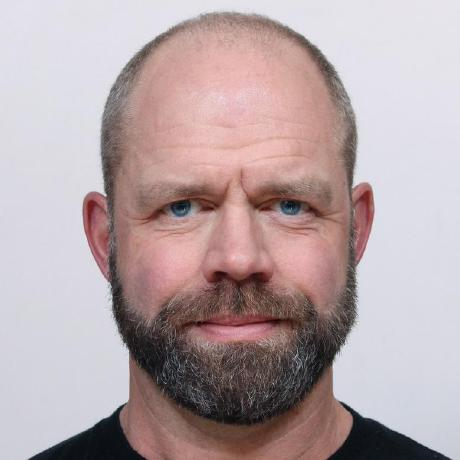

Hi, I am Thomas
Think it, Build it, Ship it.
Senior Software Development Engineer | Backend Systems | Distributed Services | Go | AWS
About
I'm a pragmatic senior engineer with 20+ years of experience delivering reliable backend systems in high-stakes environments. My work spans AWS, Elasticsearch, cybersecurity, Go, Java, SQL, and Kubernetes, with a strong focus on distributed systems, data-intensive services, and production-grade reliability.
I lead through clarity, structure, and disciplined engineering practice. I'm at my best when building backend services, improving technical processes, raising engineering standards, and ensuring teams operate with predictable delivery and clean execution. I've contributed across major domains — from databases and CI/CD pipelines to containerization, modernization efforts, and coaching teams toward higher technical maturity.
Specialties: Backend engineering, distributed systems, Go, cloud architectures, data pipelines, Elasticsearch, reliability engineering, CI/CD, secure coding.
Projects
Blog
All posts →Contact
I'm open to interesting conversations and opportunities.